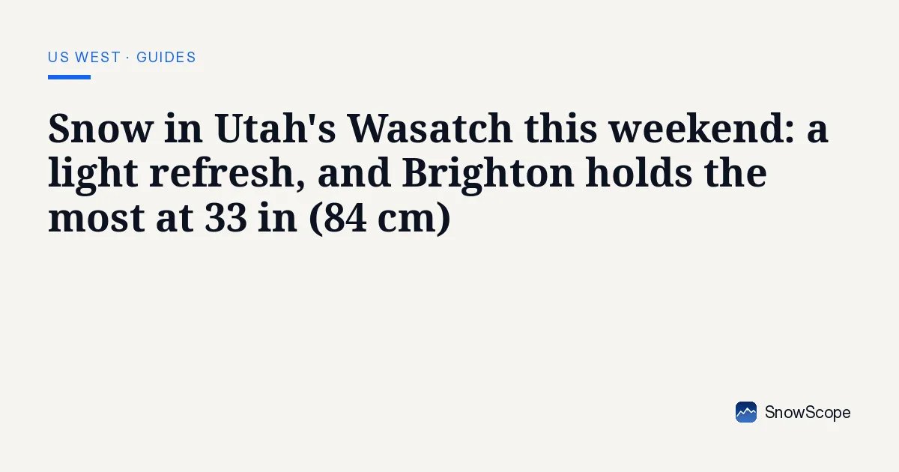

Snow in Utah's Wasatch this weekend: a light refresh, and Brighton holds the most at 33 in (84 cm)
Expect a small top-up rather than a powder weekend in the Wasatch: about 3 in (8 cm) is forecast at Brighton and 3 in (7 cm) at Alta over Saturday and Sunday, most of it on Saturday. The base is already solid, 32 in (81 cm) on Alta's upper slopes and 33 in (84 cm) at Brighton, so the groomers will be good and the off-piste still needs care.
See the live snow forecast for Wasatch in the SnowScope appSnow depth, powder alerts and the 3D map, free.
Little Cottonwood: Alta and Snowbird
Alta and Snowbird share almost the same numbers this week: 32 in (81 cm) up top, nothing new in the last three days, and 3 in (7 cm) coming over the weekend. By Monday the upper slopes should sit near 33 in (85 cm).
Against history the canyon is a little behind. At 9,547 ft (2,910 m) Alta has 22 in (56 cm) where 26 in (66 cm) is usual for November 27; Snowbird at 9,357 ft (2,852 m) has 22 in (56 cm) against 23 in (58 cm). Close enough that a single December storm erases the gap.
One number puts that in context: on our record the leanest of 46 winters at Alta was the last one, 2025-26, which peaked at only 5.2 ft (158 cm). This season is already in better shape than that one was at this point.
| Resort | Snow today | Sat + Sun | Monday |
|---|---|---|---|
| Alta | 32" | 3" | 33" |
| Snowbird | 32" | 3" | 33" |
| Brighton | 33" | 3" | 35" |
| Solitude | 32" | 3" | 33" |
| Park City | 21" | 4" | 23" |
Big Cottonwood: Brighton and Solitude
Brighton is the deepest of the five today with 33 in (84 cm) and the best weekend forecast at 3 in (8 cm). Solitude, just down the road, has 32 in (81 cm). At 9,600 ft (2,926 m) Brighton's base reads 21 in (54 cm), a touch under the usual 25 in (63 cm) for the date.
Big Cottonwood is usually the easier canyon to drive on a busy weekend; check the canyon road rules before leaving the valley.
Park City: thinner, with more terrain to fill
Park City sits lower and has 21 in (54 cm) on its upper runs, with 4 in (10 cm) forecast for the weekend. At 8,435 ft (2,571 m) the pack is 14 in (36 cm), where 16 in (40 cm) is normal. Expect groomed runs on the upper mountain and a thinner lower half; the Park City snow page tracks it day by day.
Reading the weekend forecast
Most of the weekend snow comes on Saturday, November 28, and it falls on a firm base, so it will ski well on groomed runs and pack quickly in the trees. Brighton and Alta get the most because the storm comes in from the northwest and the upper Cottonwood canyons squeeze out the last of its moisture.
Sunday should be colder and mostly dry. Monday adds a little more, about 0 in (1 cm) at Brighton, enough to soften the surface for the start of the week.
If you only have one day, choose Saturday afternoon in Big Cottonwood or Sunday morning in Little Cottonwood, when the canyon traffic is lighter and the new snow has been groomed in.
Remember that the canyons are steep, narrow roads: when snow is falling they can close for avalanche control, sometimes for hours, so leave time either side of your ski day.
What December usually adds
December is when the Wasatch base is built. At Alta the usual depth at 9,547 ft (2,910 m) rises from 33 in (83 cm) on December 8 to 4.2 ft (128 cm) on Christmas Day; in 98% of 46 winters it had more than 50 cm (20 in) by New Year. The full picture is on the Alta snow page and the Brighton snow page.
Tips for skiers
- Saturday morning is the pick of the weekend if you want the few fresh inches; Sunday will be firmer.
- Stay on open, groomed terrain off-piste is still early-season thin over rocks and stumps.
- Carpool or use the canyon buses: parking fills fast on the first good weekend after Thanksgiving.
- More resorts on the US West snow hub; plan a December trip with the trip planner.
About these numbers
Snow numbers: SnowScope's snow map and forecast for today, and our record of 46 past winters at each resort (an estimate for the area, not the resort's own report).
Cite this report
For research, teaching or the press: the numbers and charts are free to reuse under CC BY 4.0 with this citation.
SnowScope (2026), Snow in Utah's Wasatch this weekend: a light refresh, and Brighton holds the most at 33 in (84 cm), https://snowscope.app/blog/en/2026/11/utah-wasatch-snow-this-weekend-28-29-november-alta-brighton-park-city.html, accessed 2026-11-27
SnowScope (Atlas Labs). (2026, November 27). Snow in Utah's Wasatch this weekend: a light refresh, and Brighton holds the most at 33 in (84 cm). SnowScope snow reports. https://snowscope.app/blog/en/2026/11/utah-wasatch-snow-this-weekend-28-29-november-alta-brighton-park-city.html
BibTeX
@misc{snowscope2026utahwasatchsnowthisweeke,
author = {{SnowScope (Atlas Labs)}},
title = {Snow in Utah's Wasatch this weekend: a light refresh, and Brighton holds the most at 33 in (84 cm)},
year = {2026},
month = nov,
howpublished = {\url{https://snowscope.app/blog/en/2026/11/utah-wasatch-snow-this-weekend-28-29-november-alta-brighton-park-city.html}},
note = {Published 2026-11-27 18:36 UTC; accessed 2026-11-27}
}· CC BY 4.0 · Methods, data and tools →
Follow Wasatch
Free: a message when fresh snow is coming, and the forecast every morning.
More snow reports

Alta's mid-mountain usually peaks near 109 in (276 cm). Our 46-winter snow history answers when to come, which height suits you, and why the road matters. Data from 2026-11-07.

Red Lodge Mountain in Montana's Beartooths: snow today, the weekend storm, how far behind a normal year it is, and what December usually brings.

Mammoth has 19 in (48 cm) on its upper slopes and sits close to a normal late-November base. What each December week usually brings, from 46 winters.